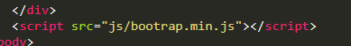
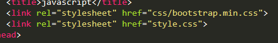

How to Link bootstrap to a website
In order to link a website to bootstrap you have to download bootstrap first. Then the second step is to link css and javascript file to the project folder.Like as shown below.

And then to link javascript

- Bootstrap
- Windows10 Linux subsystem
- Snipping in Windows 10
- Responsive Frameworks LPI Linux Essentials Chrome dev tools debugging LPIC-1 EXAM 101
- Comptia a+
- Scripting and automation
Article Categories
Links for learning
Ubuntu Home folder in windows subsystem
In windows 10 you can use ubuntu bash terminal. The installation procedure takes to enable linux sub systems in system configurations. The shell takes many linux commands inside the bash prompt which looks similar to ubuntu terminal prompt.
The home folder is located nested in users folder as such:
C:\Users\onesi\AppData\Local\Packages\CanonicalGroupLimited.
Ubuntu18.04onWindows_79rhkp1fndgsc\LocalState\rootfs
In order to navigate to hard drive partitions, you need to type:
cd /mnt/cnamraj@Namraj-4GZ7: cd /mnt/c/Users/onesi/Documents$